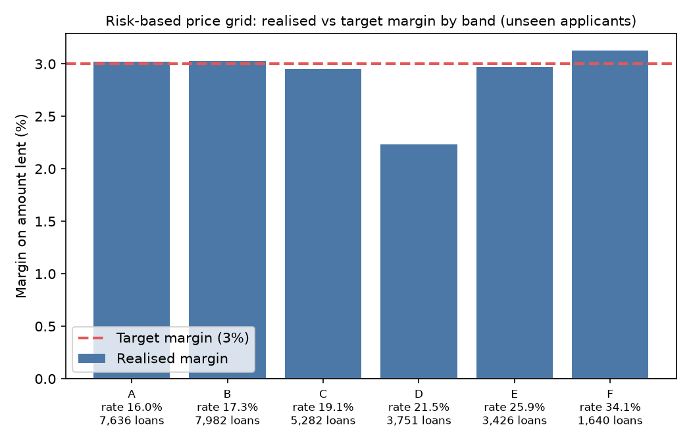
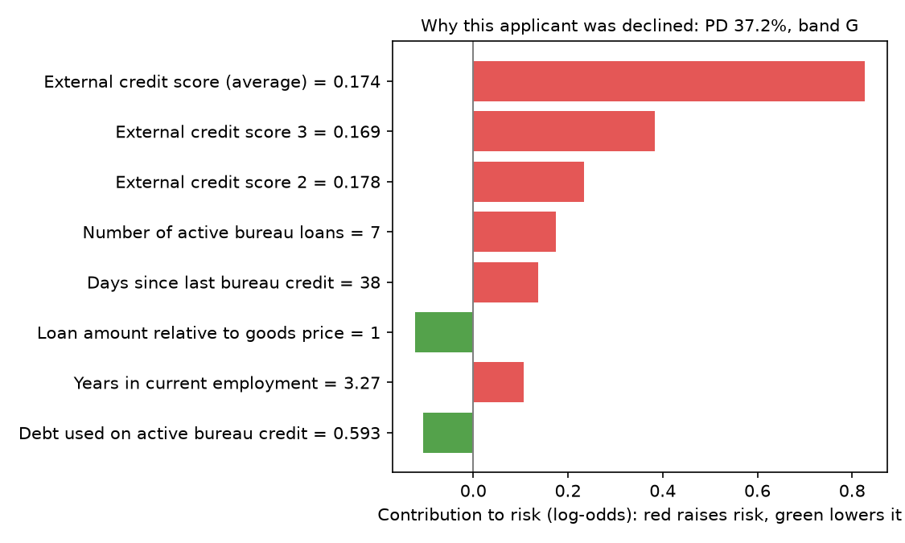
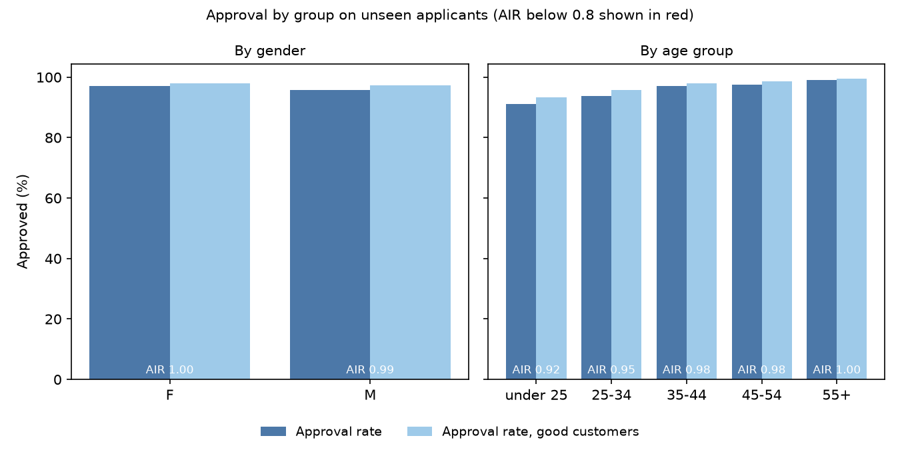
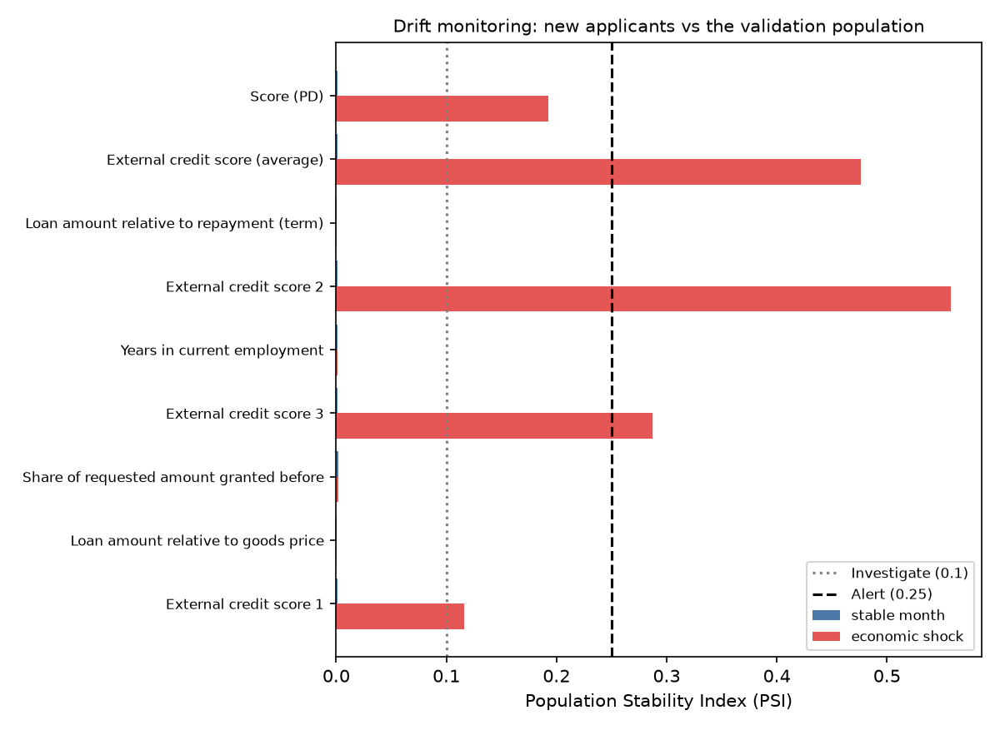

Applied statistician working on pricing and data at Bosch Kenya, with four years of BI and analytics before that. I build models end to end: from SQL features to a tested API, with the reasons, fairness checks and money impact a credit committee will ask about.
{
"pd": 0.031,
"risk_band": "B",
"decision": "approve",
"interest_rate": 0.1726,
"reasons": []
}
A consumer lender wants to approve more good borrowers, charge each loan a rate that matches its risk, and keep losses on target, including thin-file applicants with little credit history. I built the full decision engine on 356,255 real loan applications from Home Credit (seven linked tables): probability of default → risk band → approve or decline → interest rate, with a reason for every decision.
Feature models in DuckDB, a validation gate that fails loudly, and a logistic scorecard where every coefficient has the business-expected sign.
LightGBM and XGBoost tuned with Optuna, compared by cross-validation and a paired bootstrap, tracked in MLflow.
Default probabilities checked for calibration, then turned into seven risk bands with a rate that covers funding, cost, expected loss and margin.
TreeSHAP reason codes for each decision, a fairness audit by gender and age, and a generated model card.
FastAPI scoring service in Docker, drift monitoring with the Population Stability Index, and CI on every push.
Rate = (margin + funding + operating cost + PD × LGD) ÷ (1 − PD), capped at 36%. Checked on 30,752 applicants the model never saw.
| Band | Upper PD | Interest rate | Loans | Realised margin | Note |
|---|---|---|---|---|---|
| A | 2.5% | 16.0% | 7,636 | ≈ 3.0% | On target |
| B | 5% | 17.3% | 7,982 | ≈ 3.0% | On target |
| C | 8% | 19.1% | 5,282 | ≈ 3.0% | On target |
| D | 12% | 21.5% | 3,751 | 2.2% | Below target, on the watch list |
| E | 20% | 25.9% | 3,426 | ≈ 3.0% | On target |
| F | 30% | 34.1% | 1,640 | ≈ 3.1% | On target |
| G | 100% | — | — | — | Declined: average PD 39% would need a 53.7% rate, above the cap |




Gender and age live in a separate table, used only for the fairness audit. Credit scoring is high-risk under the EU AI Act.
Two features came out with the wrong sign in the scorecard. I investigated and replaced them, accepting a small AUC drop (0.742 to 0.740) for a model a risk team can trust.
Cross-validation chose "none" over Platt and isotonic scaling: the ensemble's calibration error was already 0.26%.
Covering a 39% default risk needs a 53.7% rate. Above the 36% cap, the honest decision is to decline 3.5% of applicants.
Catching fraudulent transactions in highly imbalanced payment data, with alert thresholds set by investigation cost.
Demand and pricing forecasts with honest backtesting and uncertainty ranges.
Decision-ready reporting built on a clean data model, for the people who act on the numbers.
Pricing analysis and data work for the Kenyan business.
Business intelligence development: data models, reporting and dashboards.
Data analysis and reporting.
Microsoft Certified: Power BI Data Analyst Associate.